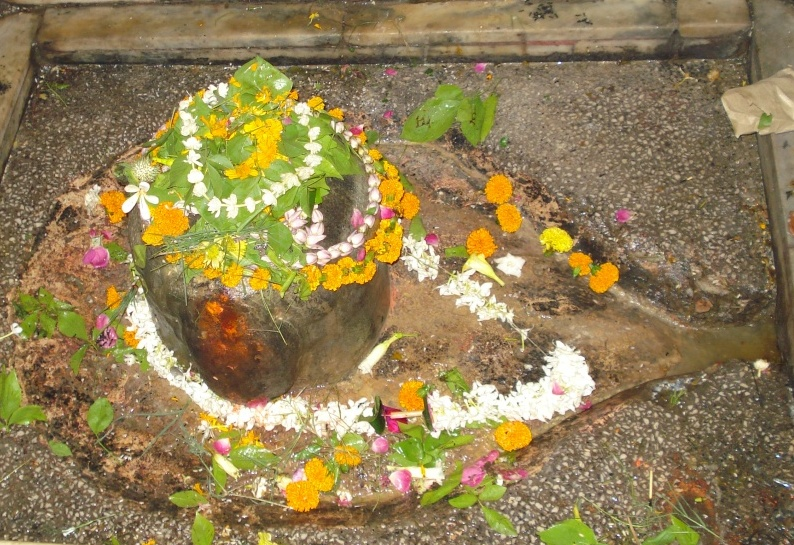

<?xml version="1.0" encoding="UTF-8"?><rss version="2.0"
	xmlns:content="http://purl.org/rss/1.0/modules/content/"
	xmlns:wfw="http://wellformedweb.org/CommentAPI/"
	xmlns:dc="http://purl.org/dc/elements/1.1/"
	xmlns:atom="http://www.w3.org/2005/Atom"
	xmlns:sy="http://purl.org/rss/1.0/modules/syndication/"
	xmlns:slash="http://purl.org/rss/1.0/modules/slash/"
	>

<channel>
	<title>Amareshwar &#8211; Varanasi Temples</title>
	<atom:link href="index.html" rel="self" type="application/rss+xml" />
	<link>../../../../../index.html</link>
	<description>Temples of Varanasi as referred to in Kashi Khand</description>
	<lastBuildDate>Thu, 19 Jun 2025 05:16:46 +0000</lastBuildDate>
	<language>en-US</language>
	<sy:updatePeriod>hourly</sy:updatePeriod>
	<sy:updateFrequency>1</sy:updateFrequency>
	<generator>https://wordpress.org/?v=4.6.29</generator>
	<item>
		<title>AMARESHWAR</title>
		<link>../../../../../shiva-temples/amareshwar/index.html</link>
		<pubDate>Sun, 09 May 2010 05:50:18 +0000</pubDate>
		<dc:creator><![CDATA[admin]]></dc:creator>
				<category><![CDATA[Amareshwar]]></category>
		<category><![CDATA[Other Shiva Temples (A-D)]]></category>
		<category><![CDATA[Shiva Temples]]></category>
		<category><![CDATA[amareshwar]]></category>
		<category><![CDATA[ganga sagar]]></category>
		<category><![CDATA[gangasagar]]></category>
		<category><![CDATA[lolark]]></category>

		<guid isPermaLink="false">../../../../../p=280.html</guid>
		<description><![CDATA[According to Kashi Khand, Chapter 69, the place where Lord Shiva wore the skin of Gajasur after slaying the latter, was called Rudra Vasam. (Kindly refer to Krithi Vaseshwar). Once the Lord, in his form as Krithi Vaseshwar, was sitting alongwith Goddess Uma Devi when Nandi offered his prayers and stated that there are 68 [&#8230;]]]></description>
				<content:encoded><![CDATA[<p>According to Kashi Khand, Chapter 69, the place where Lord Shiva wore the skin of Gajasur after slaying the latter, was called Rudra Vasam. (Kindly refer to Krithi Vaseshwar).</p>
<p>Once the Lord, in his form as Krithi Vaseshwar, was sitting alongwith Goddess Uma Devi when Nandi offered his prayers and stated that there are 68 places of worship dedicated to Lord Shiva in this holy place.  Various idols/Shiv Lings have been brought from several other places by Nandi and installed in Kashi.</p>
<p>From Ganga Sagar Teerth, one Ling by name of Amareshwar has appeared in the Holy city of Kashi. Devotees who worship this ling will lead a long and happy life, without any fear of untimely death.</p>
<p></p>
<p style="text-align: center;"><strong>(AMARESHWAR)</strong></p>
<p>This Ling is symbolic of Amarnath Shiv Ling and devotees who cannot travel to Amarnath will derive the same benefits if they pray to this Lord.</p>
<p>&nbsp;</p>
<p><strong>&#8212;&#8212;&#8212;&#8212;&#8212;&#8212;&#8212;&#8212;&#8212;&#8212;&#8212;&#8212;&#8212;&#8212;&#8212;&#8212;&#8212;&#8212;&#8212;&#8212;&#8212;&#8212;&#8212;&#8212;&#8212;&#8212;&#8212;&#8212;&#8212;&#8212;&#8212;&#8212;&#8212;&#8212;-</strong></p>
<p><strong> </strong></p>
<p><span style="text-decoration: underline;"><strong>Kashi Khand, Chapter 69, Shlok 118</strong></span></p>
<p><strong> </strong></p>
<p><strong>गङ्गा सागरतश्चायादमरेश इतीरितम्</strong></p>
<p><strong>लिङ्ग यद्दर्शनादेव नाऽमरत्वं हि दुर्लभम्</strong></p>
<p>&nbsp;</p>
<p><strong>Amareshwar Ling has appeared in Kashi from Ganga Sagar Teerth.  A devotee who worships Holy Amareshwar Ling will attain rare immortality. </strong></p>
<p><strong> </strong></p>
<p><strong>&#8212;&#8212;&#8212;&#8212;&#8212;&#8212;&#8212;&#8212;&#8212;&#8212;&#8212;&#8212;&#8212;&#8212;&#8212;&#8212;&#8212;&#8212;&#8212;&#8212;&#8212;&#8212;&#8212;&#8212;&#8212;&#8212;&#8212;&#8212;&#8212;&#8212;&#8212;&#8212;&#8212;&#8212;&#8212;</strong></p>
<p>&nbsp;</p>
<p><strong><span style="text-decoration: underline;">LOCATION OF AMARESHWAR</span></strong></p>
<p>Amareshwar is located at B-2/20, behind Lolark Kund, Bhadaini.  People can travel almost upto Lolark (famous landmark) near Assi and behind Lolark is a building bearing the above number and this Ling is situated in the eastern side of the building below the ground level.</p>
<p>&nbsp;</p>
<p><strong>Please watch our YouTube Video about Amareshwar at following Link</strong></p>
<p>&nbsp;</p>
<p><a href="https://www.youtube.com/watch?v=PliY4V9fy8o&amp;t=6s">https://www.youtube.com/watch?v=PliY4V9fy8o&amp;t=6s</a></p>
<p>&nbsp;</p>
<p><strong><span style="text-decoration: underline;">TYPES OF POOJA</span></strong></p>
<p>This place is open for darshan throughout and devotees can perform pooja by themselves.</p>
]]></content:encoded>
			</item>
	</channel>
</rss>
